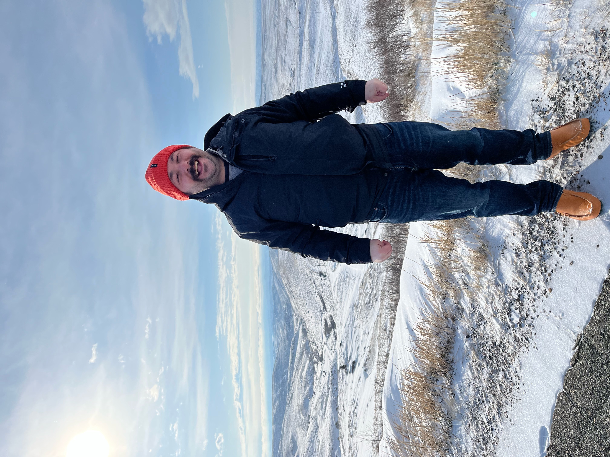
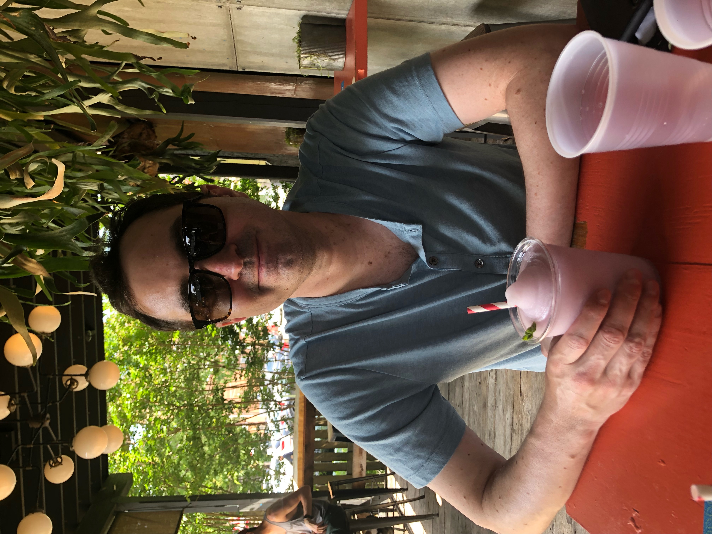
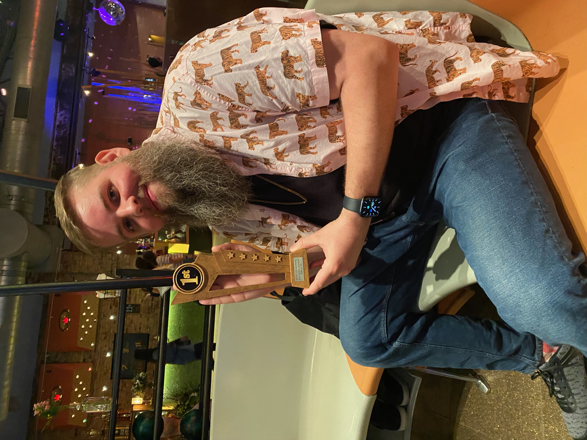

About the team...
"The team Bowl or Nothing was founded in the winter of 2021 by Jordan. Originally it was just an idea to get friends together on a Monday night and socialize and have fun. None of us had ever been in a bowling league before but we quickly grew to love the sport and even practiced in between league nights. We werent very good to start and quickly sank to the bottom of the standinds. But we perservered and continued improving eventually finishing the season in fifth place which was good enough to make the playoffs. On the night of the playoffs we were nervous but we all bowled extremely well and took home the championship as underdogs!!"
Jordan Schatz
"Jordan was team captain as he was responsible for starting and organizing the team. He is a partner at a local lawfirm that specializes in consumer protection litigation with a focus in environmental enforcement. Jordan loves eating out at all of Philadelphias great restaurants, some of his favorites include Royal Izakaya and Messina Social Club. "

Rob Crossett
"Rob is a vice president of business development for a local non profit organization that provides an array of services to small businesses including; economic development, consulting, training, and education. He received his undergraduate from Penn State and is currently taking classes at Temple University for his masters. Rob recently purchased a piece of land in Montana and is looking to eventually build a house for his family."
Larry Schwarz
"Larry graduated from Bucknell University and runs his own business as a financial adviser. He is a lover of anything music and goes to too many shows and festivals to keep track of. When Larry has a couple adult beverages he is known to go into a "Nic Cage" character which can sometimes be hilarious and sometimes frightening."
{kind=link}
Thomas McKune
"Tom is currently a private chef who loves learning about science and its intercation with food. He has two cats named Patrick and Swayze and loves to bowl and play golf. He was born in Switzerland and is both an American and British citizens. One of Tom's favorite activites is traveling and his favorite trip was hiking the Inca Trail in Peru."
